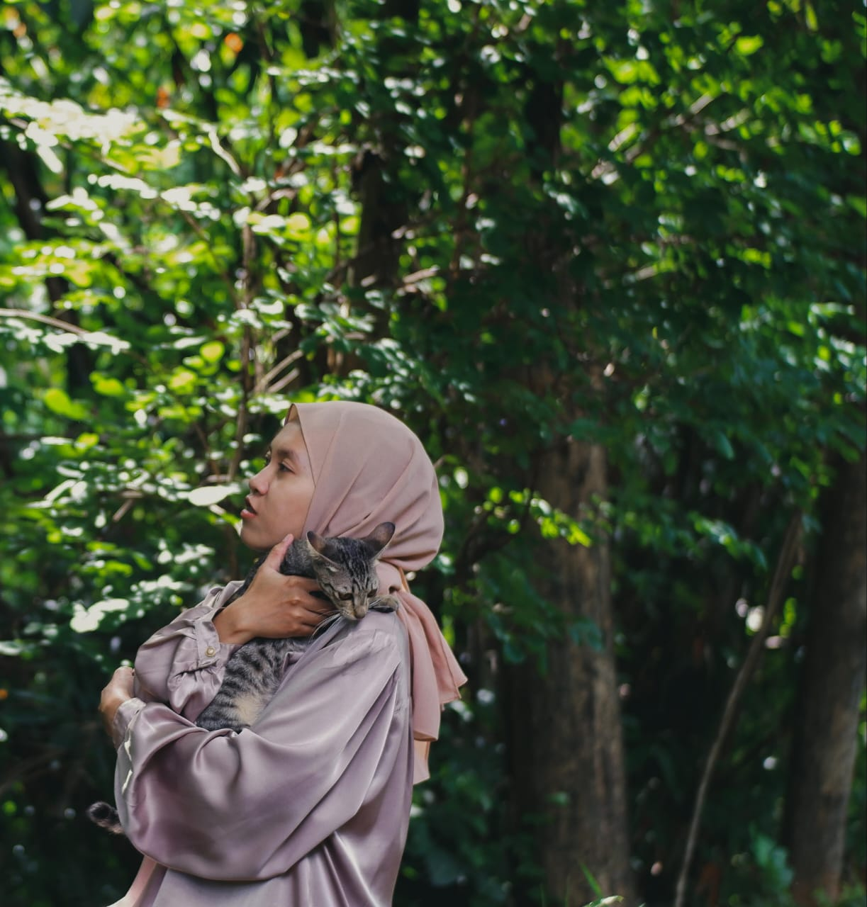

anik suhartanti
"oh i'm just a girl, trying to find a place in this world"
I like everything about nature, photography, and night night sky.
When i feel sad i listen to Taylor Swift.
Some people call me introvert, but actually i can talk much when i'm eye to eye with you. I just don't like being in crowd.